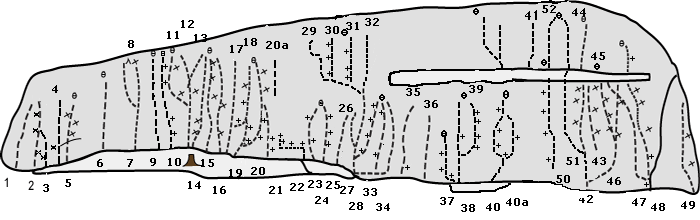

Ryssgraven
Lat: 59.48679
Long: 17.76507
Allmänt
Svabetonad klättring vackert belägen vid Kungsängen.En utmärkt klippa för klättrare som vill ha bra säkrade leder på fin klippa i graderna 4-6 varav dom allra flesta går bra att toppa. Nära E18 med tyvärr en del motorvägsbrus som följd.
Miljö
Klippan ligger väl synlig från motorvägsbron innan Kungsängen, vackert belägen precis vid stranden av Mälaren i en vik som kallas Ryssgraven, lämpligt för barnfamiljer 100m till en sandstrand,eller ta med metspö till lite större barn.
Klippan är östvänd och ca 100m lång och 15-25m hög, bergarten är fast och med ypperlig friktion. Huvuddelen av lederna är grad 4-6 och bra säkrade med borrbultar och kilar. De flesta lederna är försedda med toppankare som gör det lätt att ordna toppsäkring. Lederna längst till höger kan bara nås genom att man firar ned till insteget.
Vägbeskrivning
<div style="width: 355; float: right; margin-left: 10px; padding: 3px; border: solid 1px #cccccc;">
<googlemap width=350 height=300 lat="59.48679" lon="17.76507" zoom="14" type="map" controls="small">
59.48679,17.76507,
Ryssgraven
</googlemap>
</div>
<div style="float: right; margin-left: 10px;">
<slresa>
titel=Ryssgraven
lat=17765070
long=59486790
</slresa>
</div>
Med bil:
Ta av E18 vid Kungsängen ta vänster över motorvägen, fortsätt nedför backen till T-korsning. Ta vänster på gamla Enköpingsvägen ca 500m. Parkera nedanför början på motorvägsbron inte på grusplanen i kurvan där har bilar fått P-böter. Fortsätt 300m till klippan som syns tydligt från parkeringen.
Med Pendeltåg:
Kliv av i Kungsängen följ gamla Enköpingsvägen ca 1000m till klippan.
Leder

- 1
- Ivan
- 4
- Kilsäkrad klättring längst till vänster på klippan utsteg via en flakliknande spricka, standplats i träd.
- 2
- Olga
- 5-
- Start via brant flakspricka och vidare rakt upp,insteget säkras med en kamkil sedan 3st borrbultar.
- 5
- Volga
- 5+
- Fin och ihållande klättring 3st limbultar och toppankare.
- 6
- Lilla Syster Kanin
- 5
- Startar vid en stor ek, tydlig spricka kilsäkrad,krux förbi den lilla tallen, toppankare.
- 7
- Till Nanna
- 5+
- Samma start som Batman men går ut till vänster genom takformationen,säkras med kilar och en bult.
- 8
- Batman
- 5
- Upp svaplattan till vänster om det stora blocket vidare rakt upp till tallen på toppen kilsäkrad och en bult.
- 9
- Frågvisa Barn
- 4-
- Går till vänster om Ringrost startar vid det tydliga V-formade diedret och vidare upp via 2 paralella sprickor kilsäkrad, toppankare.
- 10
- Store Bror Kanin
- 5+
- Startar med svaplattan 3m till vänster om diedret på Ringrost fortsätt rakt upp. 4st borrbultar och en kil på mitten, standplats med 2st borrbultar.
- 11
- Ringrost
- 4
- Starta i diedret bra säkrat med kilar efter överhänget kliv ut vänster och fortsätt upp på den fina slutväggen 2 borrbultar och ankare på hyllan.
- 12
- Jord i Skorna
- 5
- Utsteg från rännan på pelare till höger om Ringrost en bladbult.
- 13
- En guttubral skrafån
- 3+
- Fortsätter upp i rännan till vänster om led 14.
- 14
- Plåster på såren
- 5
- Fin klättring till vänster på den stora svapelaren 6 borrbultar den sista gemensam med led 16 ankare på toppen.
- 15
- Vaccin
- 6-
- Inte en självständig led, går mitt på svapelaren och använder borrbultarna på led 14 och 16 och en gammal ringbult.
- 16
- Ett moln i byxor
- 4
- Jämn och fin klättring.
- 17
- En liten grön klet
- 3
- Går till höger om led 16 i den tydliga rännan.
- 18
- Röde Vips
- 4
- Leden startar i rännan, ut höger vid den första borrbulten och vidare rakt upp 3 borrbultar och ankare på toppen.
- 19
- Stampe
- 6-
- Direktinsteg till Röde Vips, 2 borrbultar.
- 20
- Kollontaj
- 4
- Samma start som led 19 koppla första bulten,traverera ut till höger och upp vid blocket fortsätt upp via den fina plattan till ett gemensamt utsteg med nästa led.
- 20a
- Sotaren
- 4
- Alternativt utsteg, liten kamkil behövs för att säkra starten.
- 21
- Efter Dagis
- 6
- Startar vid den lågt placerade borrbulten, efter det knepiga insteget upp på ett litet sva och vidare upp via högerkanten på plattan tills leden går ihop med led 20.
- 22
- Gökägg
- 7+
- Startar 2m till höger om första borrbulten i taket (också 2m till höger om den lilla tallen på hyllan), efter det svåra insteget traverserar till vänster under taket (andra borrbulten i vänstra del av taket) sedan fortsätter du ut över taket till tredje och fjärde borrbulten tills leden går ihop med led 21.
- 23
- Trotskij
- 5+
- Kort men fin klättring, en kil efter insteget 2 borrbultar och ankare på hyllan.
- 25
- Peter
- 6
- Dieder med fingerspricka i. Välsäkrad med små kammar, Ballnutz eller kilar. Ankare finns en bit till höger, lite högre upp på den stora hyllan.
- 26
- Anastasia
- 4
- Startar med Rasputin ut vänster i den breda sprickan.
- 27
- Rasputin
- 4
- Fin välsäkrad spricka.
- 28
- Belsebub
- 6
- Startar med Rasputin 3m traversera sedan ut höger på väggen till den första borrbulten,fin klättring upp till hyllan, 4 borrbultar, det går att starta direkt nerifrån ca 6+ om man har långa armar.
- 29
- Snedrag
- 4
- Upp i hörnet och ut till vänster under taket och vidare upp.
- 30
- Drömhyllan
- 4-
- Väggen rakt ovanför Rasputin den vänstra leden, 3 borrbultar standplats på hyllan toppankare.
- 31
- Pytheas resa till Thule
- 6
- Leden går mellan Drömhyllan och Ilitj 3 borrbultar.
- 32
- Ilitj
- 4-
- Fortsättningen rakt ovanför Rasputin fin klättring säkras med små vajerkilar och standplats på hyllan toppankare.
- 32a
- Gamla Farbror Plös
- 4-
- Till höger om Ilitj två korta kilsäkrade diedrar och sedan väggklättring säkrat med två st borrbultar och standplats på hyllan toppankare.
- 33
- Gottlob
- 6-
- Startar med Ägirs Väg men efter 3m fortsätt rakt upp till hyllan 2 borrbultar.
- 34
- Ägirs väg
- 6
- Startar där landremsan slutar.Delikat och osäkrad travers 6m, det sluttande fotsteget innan man kommer till det grunda diedet brukar väcka tanken på att man borde ha tagit med sig en badhandduk, sedan rakt upp till hyllan via fina tunna sprickor som det går fint att säkra i med små vajerkilar.
Led 37-40a kan bara nås genom att man firar ner till den lilla landtungan, lederna som börjar där är alla fina och värda att upptäcka, fira ner i någon av dom två toppankarna .
- 37
- Ran
- 5-
- traversera ut vä över vattnet fortsätt rakt upp till toppankaret, fin klättring
- 38
- Dimman lättar
- 5+
- Startar med det fina hörnet följ den vänstra tunna spricklinjen upp till standplatsen med toppankare, bra säkrad med kilar och 1st borrbult
- 39
- Dagen efter
- 6-
- Startar i samma hörn som "Dimman lättar" men fortsätter ut ut höger uppför den branta väggen och avslutas med ett sva upp till toppankaret på föregående led.
- 40
- Storen
- 6
- Startar med flaksprickan och upp till nischen ut vä och vidare upp till standplats på den stora hyllan
- 40a
- Halls Hammare
- 6+
- Startar med flaksprickan och upp till nischen ut hö och vidare upp till standplats på den stora hyllan
- 41
- White wall
- 5-
- Vit vägg högt upp på klippan som nås från den långa hyllan c:a 15 m t.v. om toppankaret ovanför Sputnik.
Följande leder kan bara nås med firning, ett toppankare är placerade ovanför Sputnik och ett ovanför Potemkin, på den stora hyllan ovanför led 32-37 sitter ett ankare (2st borrbultar).
- 42
- Poltava
- 7-
- Följer en tunn spricklinje i vänstra delen av en slät vägg med ett tak mitt på. Insteg från en trekantig hylla vid vattnet. En kort skålformig dieder leder via hyllor upp till starten av de egentliga svårigheterna. Följ spricklinjen. Tre borrbultar och en liten vajerfriend. Fin led även om början är väsentligt lättare än resten.
text=Hade tidigare två(!) handslagna borrbultar men är nu ordentligt bultad. Starta från den lilla hyllan och klättra upp till tvärsprickan. Följ den med fötterna till vänster tills du oundvikligt och naturligt når Poltava. Håll höger och klättra inte in i Poltava helt och hållet. Utsteg genom eller till höger om den polerade nischen. Varierande och mycket teknisk klättring med spännande utsteg. Hårdaste leden i Ryssgraven!}}
- 44
- Sputnik
- 4+
- Utsteg från hyllan ovanför Poltava säkras med kilar ankare på toppen.
- 46
- Faktor våt
- 6+
- Startar från samma trekantiga hylla som Poltava. Travers höger några meter. Sedan lätt klättring upp till en hylla under den släta väggen. Borrbult. Gå inte rakt upp, utan klättra lite snett upp åt vänster. Då får man en lite känslig travers tillbaka höger in till sprickan. Någon meter ovanför finns ett litet tak. Borrbult ovanför taket, därefter leder en dieder snett upp åt vänster (krux). Säkras med kilar och någon friend förutom de två borrbultarna.
- 47
- Aurora
- 5+
- Startar i en hängande standplats precis över vattnet, en borrbult och en kil, kliv ut åt vänster och följ sprickan på arêten upp till den långa hyllan, kilsäkrad.
- 48
- Potemkim
- 6-
- Startar från samma standplats som Aurora fin väggklättring upp till ett skålformat dieder, 5st borrbultar efter hyllan fortsätt rakt upp i sprickan till toppankaret.
- 49
- Muroroa
- 5-
- Ingen märkvärdig led. Startar från en liten hylla ovanför vattnet, kilsäkrad standplats där. Man behöver inte fira, utan det går att ta sig till insteget från sidan. Sedan upp och ut till vänster på plattan som utgör den högra sidan av en stor groove. Två borrbultar. Lite krystad linje, eftersom det går att följa plattans högra kant och då blir klättringen knappast mer än 3+ någonstans.
lederna 50-52 nås bäst genom att fira ner från toppankaret.
- 50
- Medelmåttornas muntra skara
- 4
- Startar från en gräshylla och upp till ankaret på den långa hyllan under led 52.
- 51
- Familjeutflykten
- 4
- Startar precis över vattnet med dom första 8m på "Poltava", fortsätt upp i hörnet upp till den långa hyllan följ sedan dom tydliga och fina sprickorna till toppankaret, bra säkrad med kilar.
- 52
- Exit
- 5
- Startar från ankaret (2bb) på den långa hyllan, följ sprickan .
Länkar
Mark Harris stod för mycket av ursprungsmaterialet till den här sidan, och hans sida om klättring kring Uppsala är ovärderlig om man sitter fast i den uppländska leran och undrar vart alla klippor tagit vägen.
Kategori:Sva
Kategori:Sport
Kategori:Trad
Kategori:Stockholm
Kategori:Norra Stockholm
Copyright (C) Permission is granted to copy, distribute and/or modify this document under the terms of the GNU Free Documentation License, Version 1.3